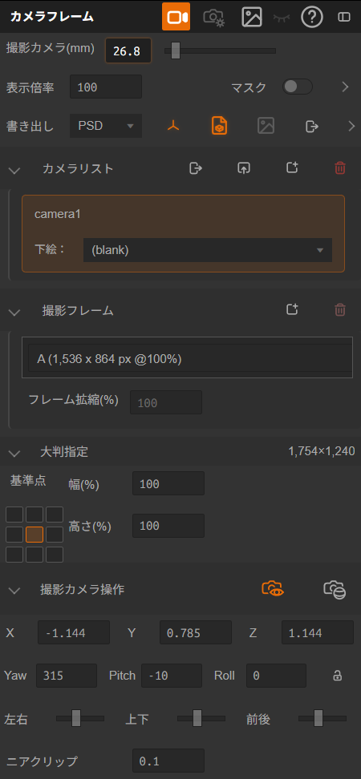
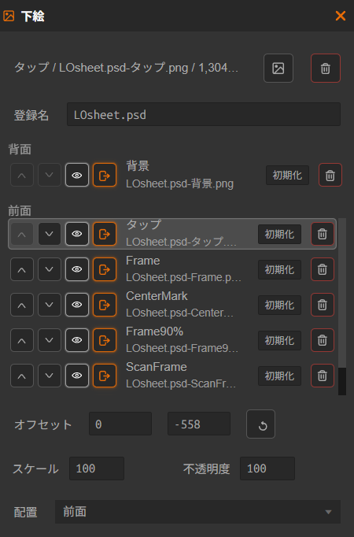
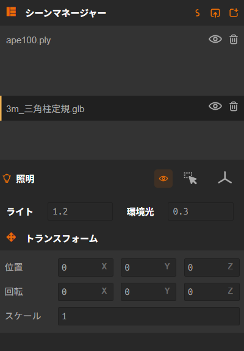

CAMERA FRAMES 操作マニュアル
CAMERA FRAMES は、A4 相当の基準用紙の上に複数の撮影フレームを配置し、 撮影カメラ・下絵・書き出しをまとめて管理するための機能です。 本書は CAMERA FRAMES v2.21.12 に対応した、ユーザー向けの操作マニュアルです。
URL: https://stechdrive.github.io/supersplat-cameraframes/
1. 読み込めるファイル
ドラッグ＆ドロップ、または通常の読み込み操作で次のファイルを扱えます。
| 種類 | 拡張子 | 用途 |
|---|---|---|
| プロジェクト | .ssproj | CAMERA FRAMES の作業状態を保存・再開するためのファイルです。シーン、カメラフレーム設定、下絵、照明などをまとめて復元できます。 |
| 3DGS / splat データ | .ply / .splat / .sog / .lcc | 背景・ロケ地・大物セットなどの素材として読み込みます。 |
| 3D モデル | .glb | 小物・当たり・構図確認用の素材として読み込みます。 |
| 下絵 | .png / .jpg / .jpeg / .webp / .psd | 絵コンテや参考画像の素材として読み込みます。PSD はレイヤーを分解して複数の下絵として取り込みます。 |
2. 基本の流れ
CAMERA FRAMES は、1カットの構図を決めて、同じアセットのまま次のカットを作り、最後にまとめて書き出すためのツールです。 典型的な流れは次のとおりです。
- 3DGS ファイル（
.ply / .sog / .splat / .lccなど）や 3D モデル（.glb）、必要なら.ssprojを読み込みます。 - 必要に応じて、シーンマネージャー と トランスフォーム でアセットの位置や向きを整えます。あとから GLB の小物を追加して調整しても構いません。
- カメラワークが必要なカットでは、必要に応じて 大判指定 で基準紙を決め、撮影フレーム を追加します。
- 撮影カメラ(mm) でレンズ感を決め、撮影カメラ表示 や 撮影カメラ操作 を使ってカメラを動かし、1カット目の構図を決めます。
- 必要なら 下絵 を読み込み、絵コンテやラフに合わせて位置合わせします。下絵は カメラリスト にある各カメラごとに切り替えられます。
- そのカットが決まったら、カメラリスト に次のカメラを追加して、同じアセットのまま次のカットを作ります。
- 最後に 書き出し で現在のカメラ、全カメラ、または選択カメラを書き出します。
3. カメラフレーム パネル

3-1. ヘッダー
| 項目 | 内容 |
|---|---|
| 撮影/編集カメラ切り替え | 撮影カメラ表示 と 編集カメラ表示 を切り替えます。 最終書き出しは撮影カメラ表示の構図を基準に行われます。 |
| 撮影カメラ操作 | 編集カメラ表示中のみ開けるポップアップです。撮影カメラ(mm)、位置、回転、ニアクリップ、オービット操作 / FPV操作を編集できます。 |
| 下絵ボタン | 下絵パネルを開閉します。目アイコンで下絵全体の表示 / 非表示も切り替えられます。 |
| パネルを折りたたむ | ヘッダーだけ残してパネル本体を折りたためます。もう一度押すと再び開けます。 |
3-2. レンズ
- 撮影カメラ(mm) は、赤い撮影フレームが 100% サイズの時にその枠内に見える横方向の画角を、35mmフィルム換算のレンズ mm で表した値です。数値が小さいほど広角寄り、大きいほど望遠寄りになります。
- 構図を決める時は、35mm ならやや広角、50mm 前後なら標準、85mm 以上なら望遠寄り、という感覚で使うと合わせやすくなります。
- 編集カメラ(mm) は編集カメラ表示だけに効くレンズ値です。位置合わせや確認用の見え方を変えたい時に使い、書き出し結果には影響しません。
3-3. 表示倍率とマスク
- 表示倍率 は 25〜100% で、プレビューだけを拡大 / 縮小します。書き出し結果には影響しません。
- マスク はプレビュー専用です。PNG / PSD には含まれません。
- 全体 は全フレームの外側、選択 は選択中フレームの外側を暗くします。
- 選択フレームがない場合、選択 でも 全体 と同じ見え方になります。
- 不透明度 で暗さを調整できます。
3-4. 書き出し
- 書き出し詳細 を開き、ファイル名 を入力します。既定値は
cf-%camです。%camは書き出し時にそのカメラの名前へ置き換わるので、全カメラ や 選択カメラ をまとめて書き出す時に、カメラごとのファイル名を自動で分けられます。 - PSD / PNG から保存形式を選びます。後でレイヤーを分けて調整したい時は PSD、そのまま完成画像を出したい時は PNG が向いています。
- 書き出し対象 で 現在のカメラ、全カメラ、選択カメラ を選びます。選択カメラ を使う時は、カメラリスト 左のチェックを入れたカメラだけが対象です。
- 必要に応じて右側のアイコンで グリッド/アイレベル や GLB モデルのレイヤー出力を切り替えます。
- 下絵を書き出しに含めたい時は、下絵 パネル側で対象画像の 表示 と 出力 を両方有効にします。
- 準備ができたら 撮影カメラ表示 にして レンダリング を押します。全カメラ を選ぶと、カメラリストにある複数のカメラをまとめて書き出せます。
3-5. カメラリスト
- カメラリスト の行をクリックすると、そのカメラに切り替わります。
- 新しい構図を増やしたい時は カメラ追加、不要なカメラを消したい時は カメラ削除 を使います。
- カメラ名を変えたい時は、一覧の名前をダブルクリックして入力します。
- カメラを書き出し / カメラを読み込み で、カメラリストを .sscam として受け渡せます。
- カメラごとに使う下絵セットを変えたい時は、一覧内の下絵プリセット欄で選びます。
3-6. 撮影フレーム
- 撮影フレーム は赤い枠です。1 つの紙に最大 20 枚まで置けます。フレーム追加 で増やし、選択したフレームは フレーム削除 で消せます。
- フレームは一覧をクリックするか、赤い枠を直接クリックすると選択できます。
- 赤い枠の内側をドラッグすると移動、辺や角のハンドルをドラッグすると拡縮、回転ハンドルをドラッグすると回転、アンカーハンドルをドラッグすると基準点を変えられます。
- Shift を押しながら操作すると移動の軸ロックや 15 度刻みの回転がしやすくなります。Alt を押しながら拡縮すると、アンカー基準で左右対称に広げられます。
- 画面の何もない所を Shift + ドラッグ すると、紙全体をずらせます。アンカーハンドルをダブルクリックすると中央へ戻り、回転ハンドルをダブルクリックすると回転が 0 度に戻ります。
- 最初に有効化された時点でフレームが 0 枚なら、デフォルトの 1 枚が自動生成されます。
3-7. 大判指定
- 基準紙は 1754 × 1240 px（A4 150dpi 相当）です。
- 幅 / 高さ (%) は 100%以上で、実効サイズは各軸 16000px 以内に制限されます。
- アンカー 3×3 は拡縮時に構図を固定する基準点です。
- 出力解像度 には、今の設定で書き出される画像サイズが表示されます。解像度を見ながら、紙サイズやフレーム倍率を調整できます。
3-8. 撮影カメラ操作
- パネル本体と 撮影カメラ操作 ポップアップの両方で、位置 XYZ、Yaw / Pitch / Roll、ニアクリップを数値編集できます。
- 位置 XYZ、Yaw / Pitch / Roll、左右 / 上下 / 前後、ニアクリップ は、Alt を押しながら操作すると細かく調整しやすくなります。
- 撮影カメラ(mm) は、構図の広さを決める項目です。数値を小さくすると広く写り、数値を大きくすると狭く切り取るような見え方になります。
- ローカル移動スライダーでは 左右 / 上下 / 前後 に沿ってカメラを微調整できます。
- ニアクリップ は、カメラから この距離より手前を表示しない ための境界です。単位は m です。
- 値を大きくすると、カメラのすぐ近くにある前景を映さずに、少し離れた位置から構図を作りやすくなります。値を小さくすると、カメラの近くにあるものまで表示されます。
- ロール固定 を有効にすると、Yaw / Pitch 調整時に Roll を維持します。
4. 下絵

- 下絵を使う時は、カメラフレーム パネルのヘッダーにある 下絵ボタン で 下絵 パネルを開き、読み込み/差し替え から画像を読み込みます。全部消したい時は 全削除 を使います。
- 登録名 は、下絵の組み合わせや配置をまとめて呼び出すための名前です。カメラごとに別の下絵セットを使いたい時は、カメラリスト でカメラを選んでから調整します。
- 読み込んだ画像は一覧の 背面 / 前面 に分かれて並びます。矢印ボタンで重なり順を変えられます。
- 各画像の目ボタンで 表示、書き出しボタンで 出力 を切り替えます。不要な画像は 削除 で外せます。
- 位置合わせは 配置、オフセット、センタリング、スケール、不透明度 を使います。
- 書き出しに含めたい時は、その画像の 表示 と 出力 を両方有効にしてください。
- カメラ別に調整した値を共通状態へ戻したい時は 初期化 を押します。
5. シーンマネージャー / トランスフォーム / 照明

シーンマネージャー を開く時は、まず左上の > ボタンでメニューを開きます。
シーン内の 3DGS や GLB モデルの位置を直したい時は、まず シーンマネージャー で対象を選びます。 選んだあとに トランスフォーム を使うと、位置、 回転、スケール を数値で調整できます。

画面下部に出る編集ツールでも移動、回転、拡大縮小ができます。ドラッグで直感的に動かしたい時は編集ツール、正確に数値を入れたい時は トランスフォーム を使うと便利です。
明るさや光の向きを調整したい時は、照明 を使います。 ライトの向きを動かしたい時は、先に ライトを選択/解除 を押してライトを選択してください。 ここでは ライトのON/OFF、ライト方向をリセット、 ライト強度、環境光 を調整できます。
6. 撮影カメラ表示 / 編集カメラ表示とカメラ操作
CAMERA FRAMES には、書き出し結果に近い見え方を確認する 撮影カメラ表示 と、 シーンの中を動きながら位置関係を調整する 編集カメラ表示 があります。 切り替えはヘッダーの 撮影/編集カメラ切り替え で行います。
カメラの動かし方を変えたい時は、編集カメラ表示 にしてから、カメラフレーム パネル内の 撮影カメラ操作 を開きます。 撮影カメラ操作 の見出し右側にあるアイコンが、FPV操作 と オービット操作 の切り替えです。
6-1. FPV操作
- カメラマンの視点で前進・後退しながら構図を探したい時に向いています。
- 左ドラッグ で見回します。右を見たい時は右へ、左を見たい時は左へドラッグします。
- 右ドラッグ で左右 / 上下へ移動します。
- ホイール で前進 / 後退します。被写体に近づきたい時や離れたい時に使います。
- Ctrl を押しながら 左ドラッグ すると、指した位置を中心に回り込めます。
6-2. オービット操作
- 被写体のまわりを回り込みながら構図を探したい時に向いています。
- 左ドラッグ で回転します。右を見たい時も左を見たい時も、被写体のまわりを回る感覚で操作します。
- 右ドラッグ で平行移動します。構図全体を横や上下へずらしたい時に使います。
- ホイール で近づく / 離れるができます。
- ダブルクリック すると、その位置を中心に見やすい向きへ寄せられます。
6-3. 編集カメラ表示での平行投影
- 正面・側面・上面からまっすぐ確認して位置を合わせたい時は、編集カメラ表示 で 平行投影 を使うと便利です。遠近感が弱くなるので、手前と奥の見かけのズレに惑わされにくくなります。
- 切り替える時は、画面右上の XYZ ギズモ の X、Y、Z の丸をクリックします。向きがその軸にそろい、平行投影に切り替わります。
- もう一度自由に遠近感を見ながら動かしたい時は、オービットで回転するか FPV操作 に切り替えると通常の表示に戻ります。
7. Undo / Redo
数値入力や配置の調整は、Ctrl+Z で Undo、Ctrl+Shift+Z で Redo できます。
8. 保存形式
| 形式 | 用途 |
|---|---|
| .ssproj | シーン全体、3D データ、カメラフレーム設定、下絵、照明などをまとめて保存するプロジェクトファイルです。あとで同じ状態をそのまま再開したい時や、他の環境・他のユーザーに全部セットで渡したい時は、これで保存します。 |
| .sscam | カメラリストを受け渡すためのファイルです。カメラ設定と下絵の登録名は含みますが、3D データや下絵の実画像データは含みません。カメラだけを受け渡したい時に使います。 |
CAMERA_FRAMES では標準メニューを折りたたんでいるため、まず左上の > ボタンを押してメニューを開き、ファイル へ進みます。
普段の 保存 は、今のブラウザで続きを作業するための高速保存です。
全部まとめて保存して、あとで同じ状態を再開したい時や、他の環境や他のユーザーに渡す前は、ファイル > プロジェクトパッケージを保存 を選んで .ssproj を更新してください。
左上の * は「まだ保存していない変更があります」、PKG は「.ssproj が最新ではありません」という意味です。
PKG が出ている時は、共有や受け渡しの前に ファイル > プロジェクトパッケージを保存 をしてください。